| No. | Abbreviation | Meaning | True Name |
|---|---|---|---|
| 01 | APGAR Score | Appearance, Pulse, Grimace, Activity, Respiration Score | APGAR Score (used to assess the health of newborns) |
| 02 | BLS | Basic Life Support | Basic Life Support |
| 03 | CNS | Central Nervous System | Central Nervous System |
| 04 | CPR | Cardiopulmonary Resuscitation | Cardiopulmonary Resuscitation |
| 05 | CXR | Chest X-Ray | Chest X-Ray |
| 06 | DPT | Diphtheria, Pertussis, Tetanus | Diphtheria, Pertussis, Tetanus Vaccine |
| 07 | FTT | Failure to Thrive | Failure to Thriv |
| 08 | HIE | Hypoxic-Ischemic Encephalopathy | Hypoxic-Ischemic Encephalopathy |
| 09 | IV | Intravenous | Intravenous |
| 10 | LMP | Last Menstrual Period | Last Menstrual Period |
| 11 | MRI | Magnetic Resonance Imaging | Magnetic Resonance Imaging |
| 12 | NB | Neonatal Bab | Neonatal Bab |
| 13 | NGT | Nasogastric Tube | Nasogastric Tube |
| 14 | O2 | Oxygen | Oxygen |
| 15 | PALS | Pediatric Advanced Life Support | Pediatric Advanced Life Support |
| 16 | PCV | Pneumococcal Conjugate Vaccine | Pneumococcal Conjugate Vaccine |
| 17 | PRN | As Needed | Pro Re Nata |
| 18 | RDS | Respiratory Distress Syndrome | Respiratory Distress Syndrome |
| 19 | SIDS | Sudden Infant Death Syndrome | Sudden Infant Death Syndrome |
| 20 | TBI | Traumatic Brain Injury | Traumatic Brain Injury |
| 21 | U/A | Urinalysis | Urinalysis |
| 22 | UC | Umbilical Cord | Umbilical Cord |
| 23 | VSD | Ventricular Septal Defect | Ventricular Septal Defect |
| 24 | WBC | White Blood Cells | White Blood Cells |
| 25 | ZDS | Zinc Deficiency Syndrome | Zinc Deficiency Syndrome |
| 26 | TAC | Total Anomalous Pulmonary Venous Return | Total Anomalous Pulmonary Venous Return |
| 27 | RBC | Red Blood Cells | Red Blood Cells |
| 28 | BMT | Bone Marrow Transplant | Bone Marrow Transplant |
| 29 | HDN | Hemolytic Disease of the Newborn | Hemolytic Disease of the Newborn |
| 30 | GTT | Glucose Tolerance Test | Glucose Tolerance Test |
| Abbreviation | Meaning | Abbreviation | Meaning |
|---|---|---|---|
| AAP | American Academy of Pediatrics | ABR | Auditory Brainstem Response |
| AGA | Appropriate for Gestational Age | APGAR | Appearance, Pulse, Grimace, Activity, Respiration |
| ARDS | Acute Respiratory Distress Syndrome | ASD | Atrial Septal Defect or Autism Spectrum Disorder |
| BPD | Bronchopulmonary Dysplasia | BLS | Basic Life Support |
| BW | Birth Weight | CDC | Centers for Disease Control and Prevention |
| CHD | Congenital Heart Disease | CNS | Central Nervous System |
| CPS | Child Protective Services | CXR | Chest X-ray |
| DPT | Diphtheria, Pertussis, Tetanus | DS | Down Syndrome |
| DTaP | Diphtheria, Tetanus, acellular Pertussis | ECV | External Cephalic Version |
| EDC | Estimated Date of Confinement | ENT | Ear, Nose, and Throat |
| ETT | Endotracheal Tube | FAS | Fetal Alcohol Syndrome |
| FEN | Fluids, Electrolytes, Nutrition | FHR | Fetal Heart Rate |
| FTT | Failure to Thrive | GA | Gestational Age |
| GERD | Gastroesophageal Reflux Disease | GHD | Growth Hormone Deficiency |
| GI | Gastrointestinal | Hct | Hematocrit |
| Hib | Haemophilus influenzae type B | HIE | Hypoxic-Ischemic Encephalopathy |
| HR | Heart Rate | ICU | Intensive Care Unit |
| ID | Infectious Disease | IG | Immunoglobulin |
| IM | Intramuscular | INR | International Normalized Ratio |
| IV | Intravenous | JIA | Juvenile Idiopathic Arthritis |
| LBW | Low Birth Weight | LGA | Large for Gestational Age |
| LMP | Last Menstrual Period | LP | Lumbar Puncture |
| MCV | Mean Corpuscular Volume | MMR | Measles, Mumps, Rubella |
| MRSA | Methicillin-Resistant Staphylococcus Aureus | MRI | Magnetic Resonance Imaging |
| NBS | Newborn Screening | NC | Nasal Cannula |
| NCPAP | Nasal Continuous Positive Airway Pressure | NEC | Necrotizing Enterocolitis |
| NICU | Neonatal Intensive Care Unit | NPO | Nothing by Mouth |
| NSVD | Normal Spontaneous Vaginal Delivery | OFC | Occipitofrontal Circumference |
| OM | Otitis Media | OT | Occupational Therapy |
| PCV | Pneumococcal Conjugate Vaccine | PED | Pediatrics |
| PKU | Phenylketonuria | PNA | Pneumonia |
| PO | By Mouth | PRN | As Needed |
| PT | Physical Therapy or Prothrombin Time | RA | Room Air |
| RDS | Respiratory Distress Syndrome | RMSF | Rocky Mountain Spotted Fever |
| ROM | Range of Motion | RSV | Respiratory Syncytial Virus |
| Rx | Treatment | SIDS | Sudden Infant Death Syndrome |
| SGA | Small for Gestational Age | SMA | Spinal Muscular Atrophy |
| SOB | Shortness of Breath | SpO2 | Peripheral Capillary Oxygen Saturation |
| Sx | Symptoms | TB | Tuberculosis |
| TDaP | Tetanus, Diphtheria, acellular Pertussis | TIBC | Total Iron Binding Capacity |
| TSH | Thyroid Stimulating Hormone | Tx | Treatment |
| URI | Upper Respiratory Infection | US | Ultrasound |
| UTI | Urinary Tract Infection | VAERS | Vaccine Adverse Event Reporting System |
| VCUG | Voiding Cystourethrogram | VSD | Ventricular Septal Defect |
| VS | Vital Signs | VZV | Varicella Zoster Virus |
| WBC | White Blood Cell | WNL | Within Normal Limits |
| Wt | Weight | YO | Years Old |
| ZDV | Zidovudine (Antiretroviral Drug) |
| No. | Name | Image | Use |
|---|---|---|---|
| 01 | Mouth Gag Heister | 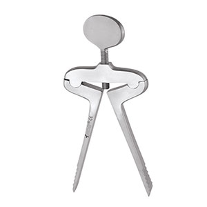 | Keeps the mouth open during oral surgeries or tonsillectomy. |
| 02 | Tongue Holding Forceps Collin | 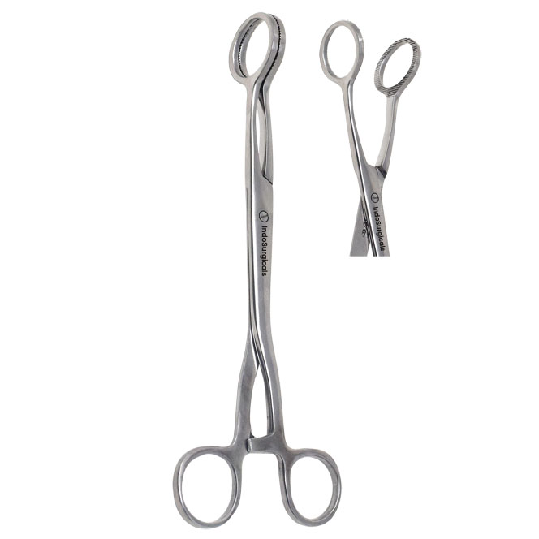 | Grasps and holds the tongue during examinations or surgeries. |
| 03 | Tuning Fork | 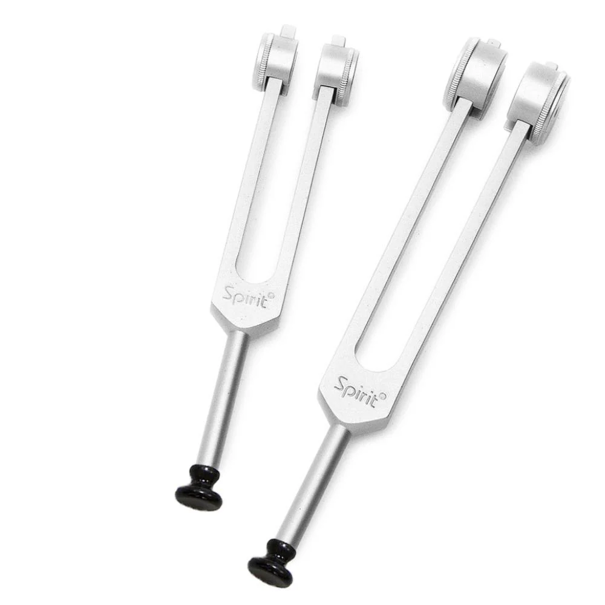 | Tests hearing and vibratory sensation (e.g., Rinne and Weber tests). |
| 04 | Magill Forceps | 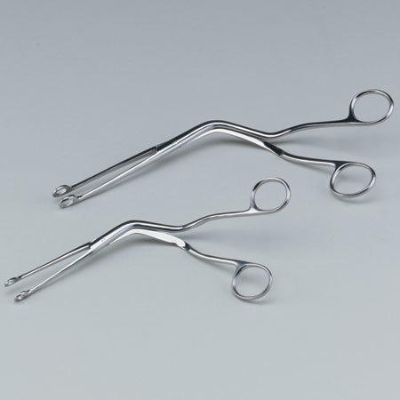 | Guides tracheal tubes or catheters during intubation. |
| 05 | Jobson Horn Probes | 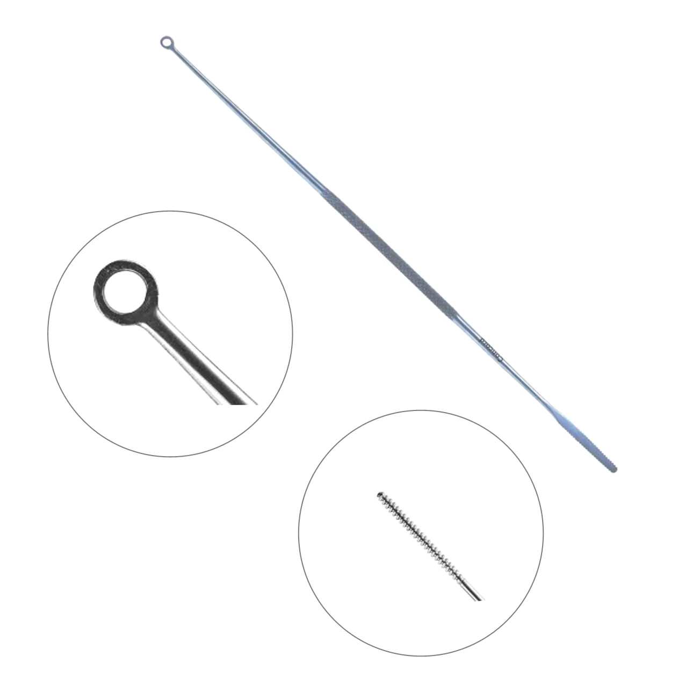 | Cleans the ear canal and removes earwax. |
| 06 | Tonsil Artery Froceps Negus | 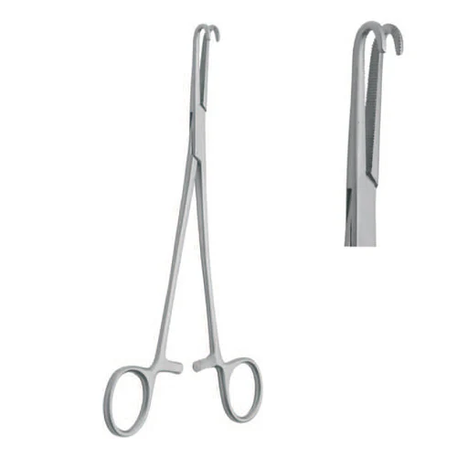 | Controls bleeding by clamping vessels during tonsillectomy. |
| 07 | Luc Forceps | 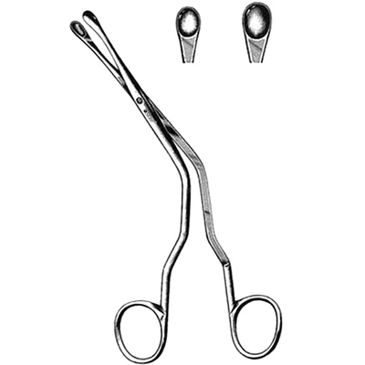 | RRemoves nasal polyps or bony fragments in nasal surgery. |
| 08 | Tongue Depressor | 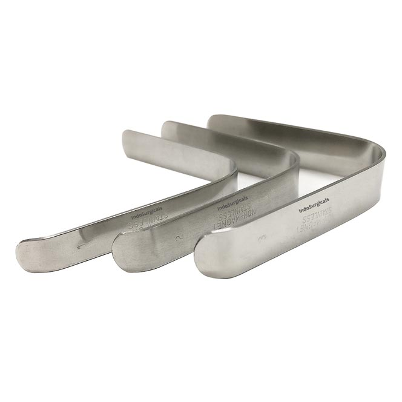 | Presses the tongue down to examine the mouth and throat |
| 09 | Nasal Speculum Killian | 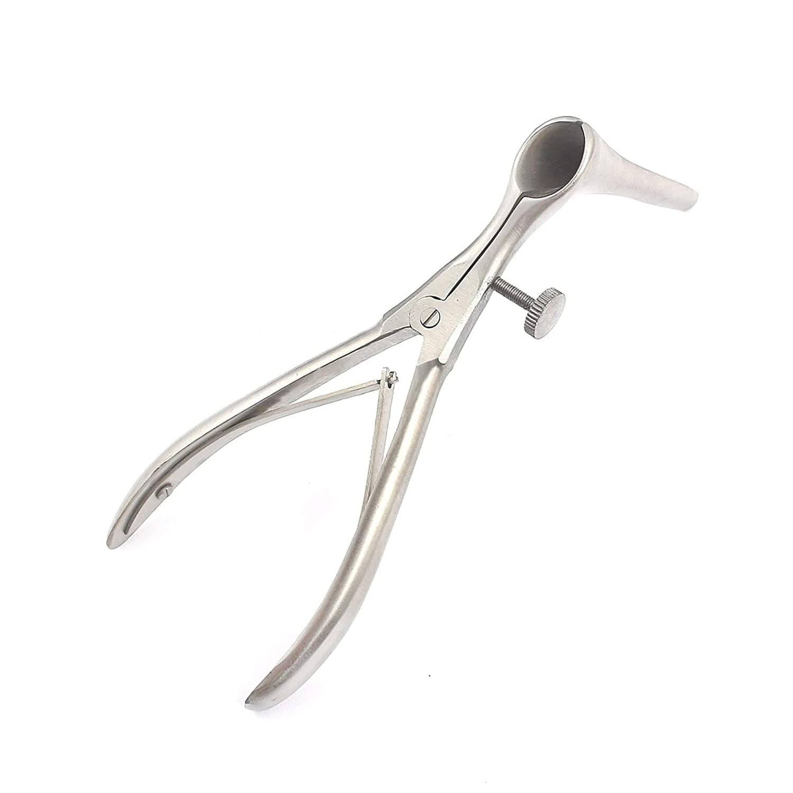 | Opens the nostrils for better visualization during nasal exams. |
| 10 | Nasal Snaras Glegg | 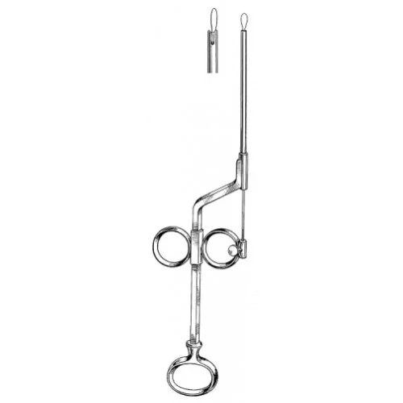 | Removes nasal polyps by cutting their base. |
| 11 | Nasal Speculum Thudicum | 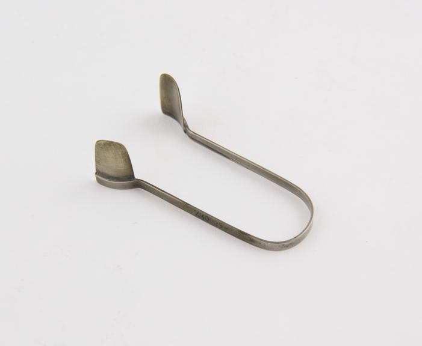 | Widens the nostrils for examination and minor nasal procedures. |
| 12 | Macintosh Laryngoscope | 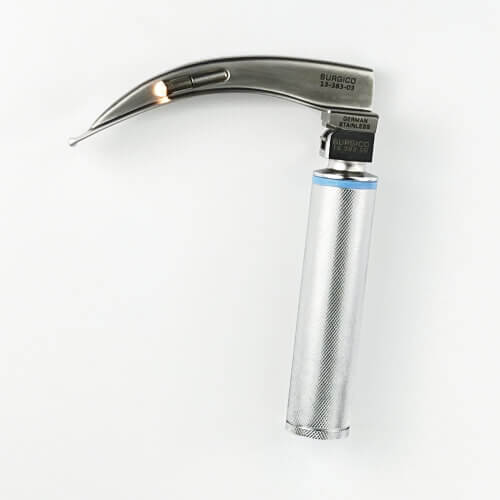 | Helps visualize the vocal cords for intubation. |
| 13 | Aural Forceps Tilley | 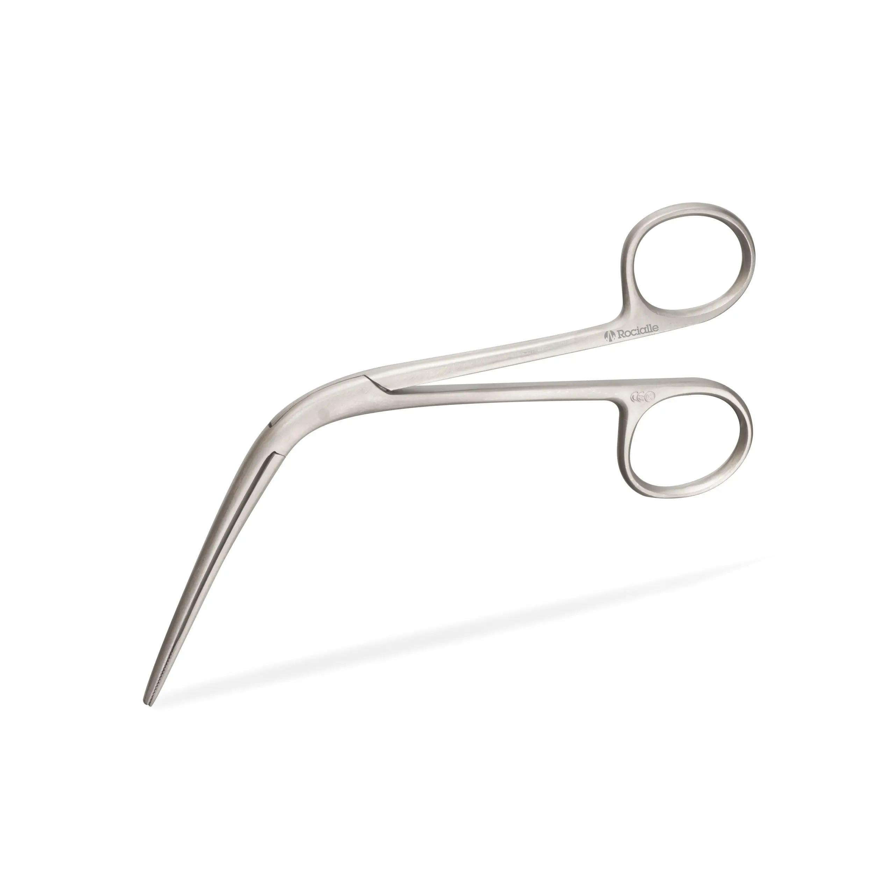 | Removes foreign bodies or packing from the ear or nose.. |
| 14 | Self Retaining Retractor | 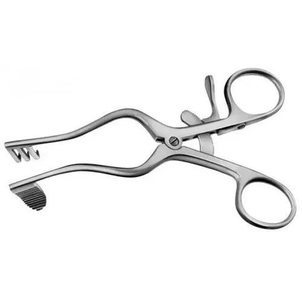 | Holds tissues apart during surgery, freeing the surgeon’s hands. |
| 15 | Humbi Skin Grafting Knife | 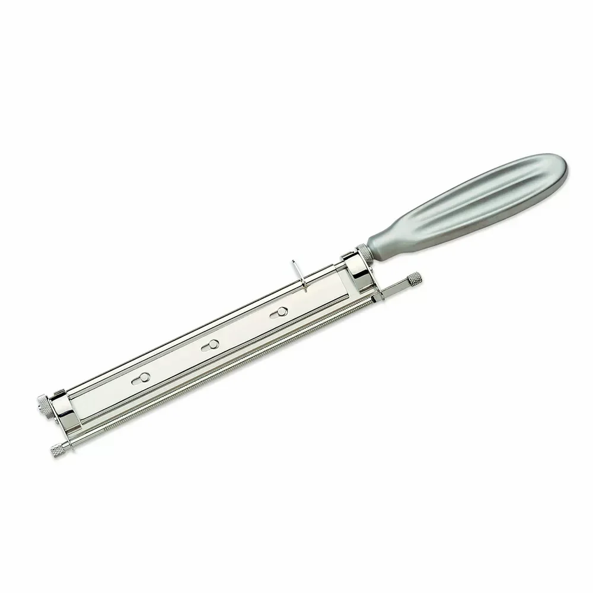 | Harvests thin skin grafts for reconstructive surgery. |